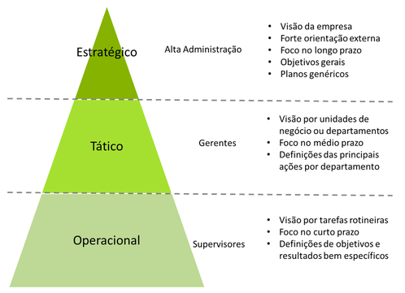

Previsibilidade
Projeções de demanda
O artigo "Previsão de Demanda e sua importância no fluxo de caixa e orçamento empresarial", publicado no blog Treasy, mostra que a Previsibilidade de mercado é um fator importante para qualquer nível de comércio, pois é uma forma de planejamento estratégico.
"A Previsão de Demanda proporciona às empresas informações valiosíssimas sobre os mercados em que operam, bem como sobre os mercados-alvo. Conhecida também como Estimativa de Demanda, está relacionada com prever o que acontecerá no futuro e que impacta diretamente a área produtiva da empresa."
Consequências
A previsbilidade de demanda leva a possibilidade de uma tomada de ação e planejamento para uma futura tendência, com uma possibilidade de expansão, diminuindo, desta forma, possíveis riscos que afetarão sua competitividade e diminuirão sua lucratividade.
Como debatido no artigo, todo esse planejamento previsível, contribui para:
- Planejar o orçamento da produção, bem como a produção em si;
- Planejar a necessidade de mão de obra adicional;
- Realizar o orçamento de matéria-prima de maneira mais acurada;
- Fazer previsões financeiras;
- Planejar atividades de marketing;
- Evitar a subprodução ou a superprodução e
- Formular estratégias de preço.
Fontes
Treasy - Acesso em 13/10/2021